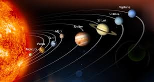

MERCURY
The smallest and fastest planet, Mercury is the closest planet to the Sun and whips around it every 88 Earth days.
A planet from Acient Greek ἀστὴρ πλανήτης (astēr planētēs), meaning “wandering star”) is an astronomical object orbiting a star or stellar remnant that is massive enough to be rounded by its own gravity, is not massive enough to cause thermonuclear fusion, and has cleared its neighbouring region of planetesimals.
The term planet is ancient, with ties to history, science, mythology, and religion. The planets were originally seen by many early cultures as divine, or as emissaries of deities. As scientific knowledge advanced, human perception of the planets changed, incorporating a number of disparate objects. In 2006, the International Astronomical Union (IAU) officially adopted a resolution defining planets within the Solar System. This definition has been both praised and criticized and remains disputed by some scientists because it excludes many objects of planetary mass based on where or what they orbit. While eight of the planetary bodies discovered before 1950 remain “planets” under the modern definition, some celestial bodies, such as Ceres, Pallas, Juno, Vesta (each an object in the Solar asteroid belt), and Pluto (the first-discovered trans-Neptunian object), that were once considered planets by the scientific community are no longer viewed as such.
The planets were thought by Ptolemy to orbit the Earth in deferent and epicycle motions. Although the idea that the planets orbited the Sun had been suggested many times, it was not until the 17th century that this view was supported by evidence from the first telescopic astronomical observations, performed by Galileo Galilei. By careful analysis of the observation data, Johannes Kepler found the planets’ orbits were not circular but elliptical. As observational tools improved, astronomers saw that, like Earth, the planets rotated around tilted axes, and some shared such features as ice caps and seasons. Since the dawn of the Space Age, close observation by probes has found that Earth and the other planets share characteristics such as volcanism, hurricanes, tectonics, and even hydrology.
Planets are generally divided into two main types: large, low-density gas giants and smaller, rocky terrestrials. Under IAU definitions, there are eight planets in the Solar System. In order of increasing distance from the Sun, they are the four terrestrials, Mercury, Venus, Earth, and Mars, then the four gas giants, Jupiter, Saturn, Uranus, and Neptune. Six of the planets are orbited by one or more natural satellites.
Additionally, the IAU accepts five dwarf planets, with many others under consideration, and hundreds of thousands of small Solar System bodies. Since 1992, hundreds of planets around other stars (“extrasolar planets” or “exoplanets”) in the Milky Way have been discovered. As of 6 July 2013, 908 known extrasolar planets (in 700 planetary systems and 140 multiple planetary systems) are listed in the Extrasolar Planets Encyclopaedia, ranging in size from that of terrestrial planets similar to Earth to that of gas giants larger than Jupiter. On December 20, 2011, the Kepler Space Telescope team reported the discovery of the first Earth-sized extrasolar planets, Kepler-20e and Kepler-20f, orbiting a Sun-like star, Kepler-20. A 2012 study, analyzing gravitational microlensing data, estimates an average of at least 1.6 bound planets for every star in the Milky Way. Astronomers at the Harvard-Smithsonian Center for Astrophysics (CfA) reported in January 2013 that “at least 17 billion” Earth-sized (i.e. 0.8–1.25 Earth masses) exoplanets with orbital periods of 85 days or less are estimated to reside in the Milky Way Galaxy.

enus is the second planet from the Sun and the sixth largest. Together with Mercury, they are the only planets without a satellite, even though Mercury is closer to the sun, Venus is the hottest planet.

Earth is the third planet from the Sun and the fifth largest planet in the Solar System with the highest density. It is currently the only known location where life is present.

Mars is the fourth planet from the Sun and the second-smallest planet with a thin atmosphere, having the surface features reminiscent both of the impact craters of the Moon, and the valleys, deserts and polar ice caps of Earth. It is the most widely searched planet for life.

Jupiter is the fifth planet from the Sun and the largest planet of the Solar System. It is the oldest planet of the Solar System thus it was the first to take shape out of the remains of the solar nebula.

Saturn is the sixth planet from the sun, with the largest planetary rings in the Solar System. It is the second-largest planet after Jupiter, and recently, with many other moons being discovered, it surpassed the number of Jupiter’s moons and is now considered the planet with the most numerous satellites.

Uranus is the seventh planet discovered in the Solar System that also led to the discovery of the last planet, Neptune they are both referred to as ice giants. Officially recognized in 1781 after many observations in the past, it is the third largest planet of the Solar System.

Neptune is the fourth largest and the farthest planet of the Solar System with the most powerful wind speeds out of all the planets. It is the smallest of the gas giants and is the first planet to be discovered by mathematical predictions in 1846.